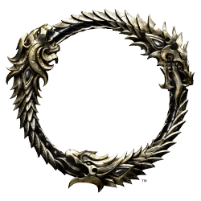

SYSTÈME D'ANTIQUITÉS : LES BASES
Avec le nouveau système d'Antiquités, vous explorerez tout Tamriel à la recherche de reliques, de trésors et de savoirs tombés dans l'oubli. Ce guide vous apporte toutes les informations essentielles à propos de ce nouveau système à découvrir dans The Elder Scrolls Online: Greymoor !
Qu'est-ce que le système d'Antiquités ?
Le système d'Antiquités est une nouvelle activité en jeu incluse dans le Chapitre Greymoor. Elle vous permet de fouiller pour identifier l'emplacement des reliques perdues de Tamriel, puis de les excaver.
Utiliser le système d'Antiquités vous permet de gagner des récompenses telles que des objets de collection (mobilier, montures, etc.) et autres trésors, ainsi que de découvrir l'Histoire secrète et les traditions de chaque région et culture.
Dans quelles zones trouve-t-on des Antiquités ?
Pratiquement toutes ! Au déploiement du nouveau système, le Bordeciel occidental ainsi que toutes les zones du jeu de base, des précédents Chapitres et des Packs de jeu téléchargeables (y compris des endroits qui pourraient vous surprendre) contiendront des trésors à localiser et déterrer.Cependant, jusqu'à nouvel ordre, vous n'en trouverez pas en Cyrodiil, dans la Cité impériale ou Griffenoire (bien que vous puissiez trouver des pistes dans ces régions).À l'avenir, nous prévoyons d'inclure des Antiquités supplémentaires dans chacune des nouvelles zones.
Par où commencer pour chercher des Antiquités ?
Pour commencer votre voyage au cœur de l'Histoire secrète de Tamriel, rendez-vous au Cercle des Antiquaires situé dans la ville de Solitude en Bordeciel occidental (juste à côté du Collège des Bardes) pour parler à Vérita Numida. Elle vous remettra l'Œil des Antiquaires et vous donnera une première quête didacticielle ainsi que quelques premières pistes de bases. Nous vous recommandons d'accomplir les deux quêtes proposées par Vérita pour vous faire une idée complète de la façon dont fonctionne le nouveau système, mais vous pourrez vous lancer à la recherche d'Antiquités directement après avoir terminé la première.